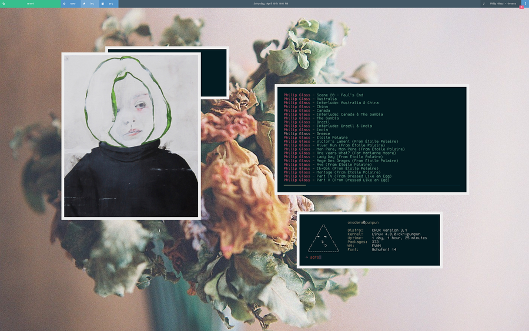
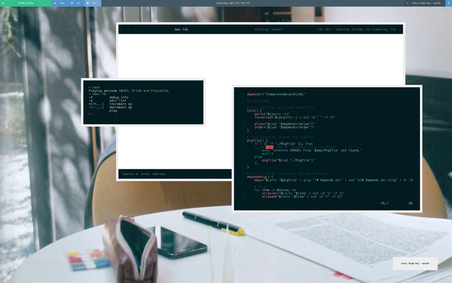
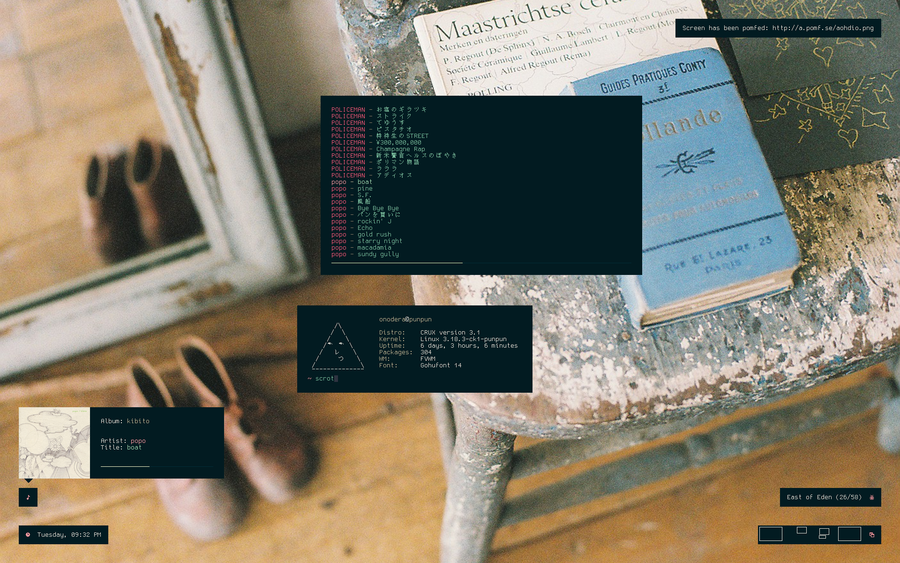
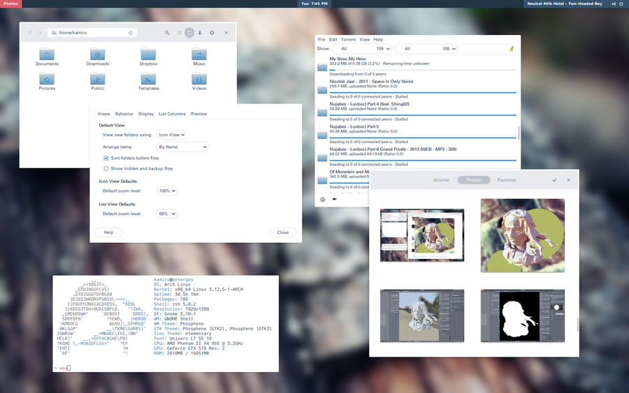
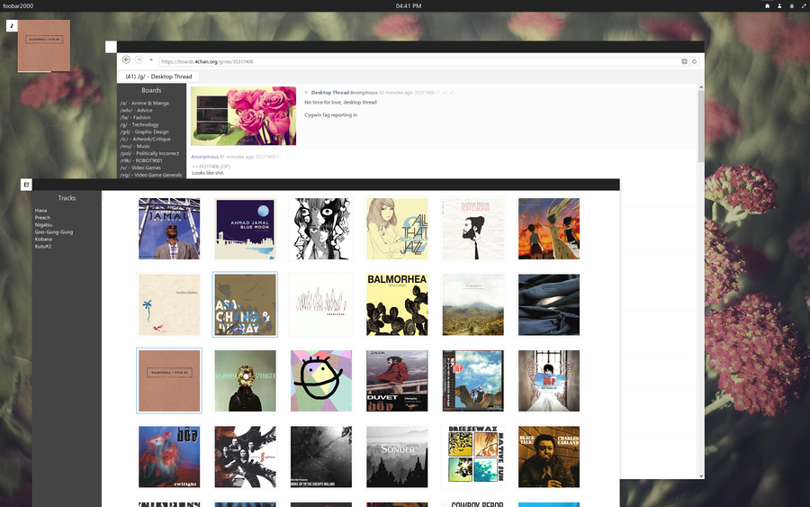
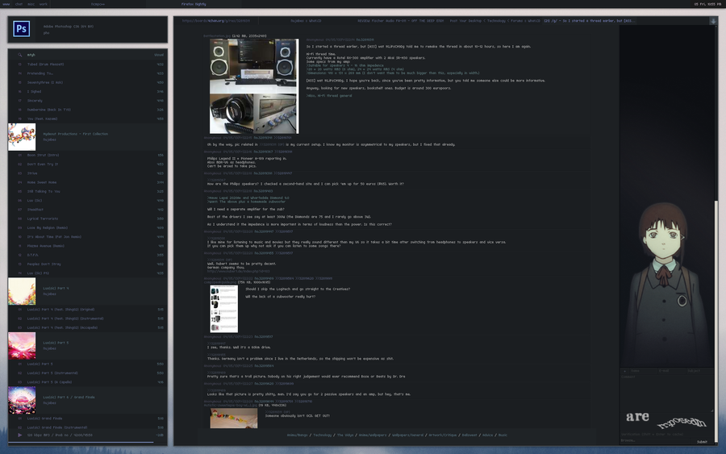

 


 
scripts。
ALLMK
A small script for CRUX that rebuilds all installed packages.
CDM
cd's to the current playing album directory.
CDP
Search and cd to CRUX port directories.
COVER
Resizes all covers to a certain size, and displays current playing album cover.
DEPMK
Calculates and installs dependencies of CRUX ports, no prt-get used!
MKURXVT
Draw & spawn an urxvt window.
NEET
A script to easily play and manage your anime/kdrama/etc., now finally usable (kinda).
NOTIFY
Logs and displays notifications with lemonbar.
PUNF
Upload files/scrots/urls/stdin to uuge.se or pomf.se
R8
Get r8ed with this script m8.
RICE
Display system info with a smug triangle face.
WALLSHUF
Changes the root image to a random image in your wallpaper directory.
WEATHER
Display weather info.
system info。
DISTRO
CRUX version 3.1.
KERNEL
Linux 4.0.0-ck1-punpun.
WM
FVWM.
TERMINAL
rxvt-unicode.
TERMINAL FONT
Gohufont 14.
COLORSCHEME
Navy and Ivory.
EDITOR
vim with a pleb config
PANEL
Lemonbar with custom scripts.
BROWSER
Firefox with custom css.
MUSIC PLAYER
mpd+ncmpcpp+mpc
VIDEO PLAYER
mpvhq
IRC CLIENT
Weechat